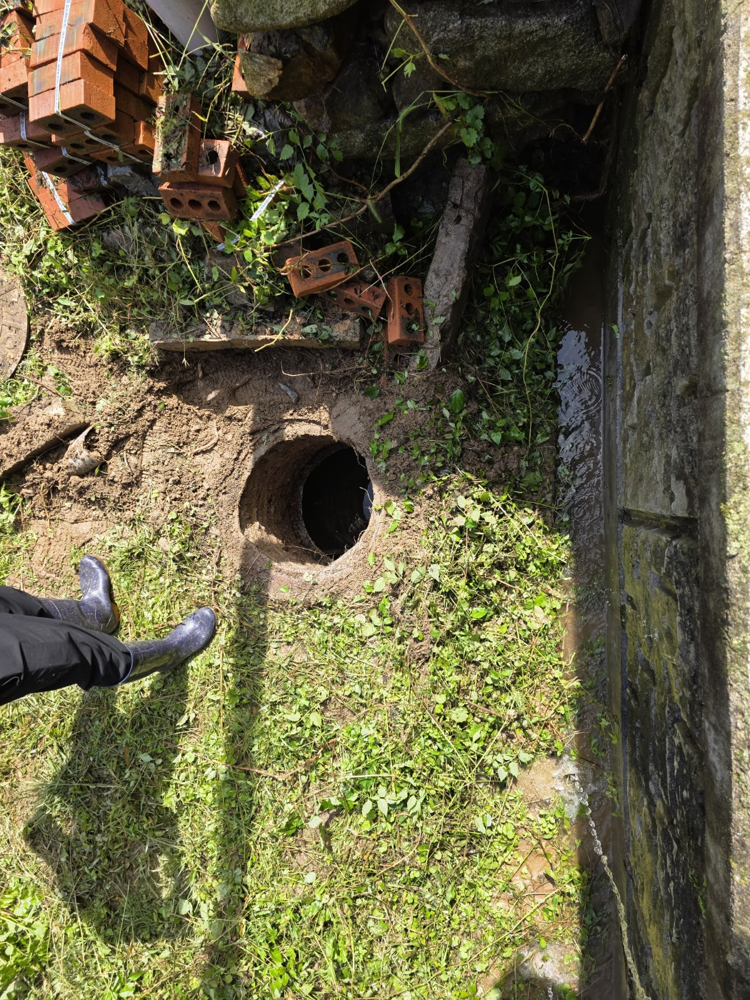
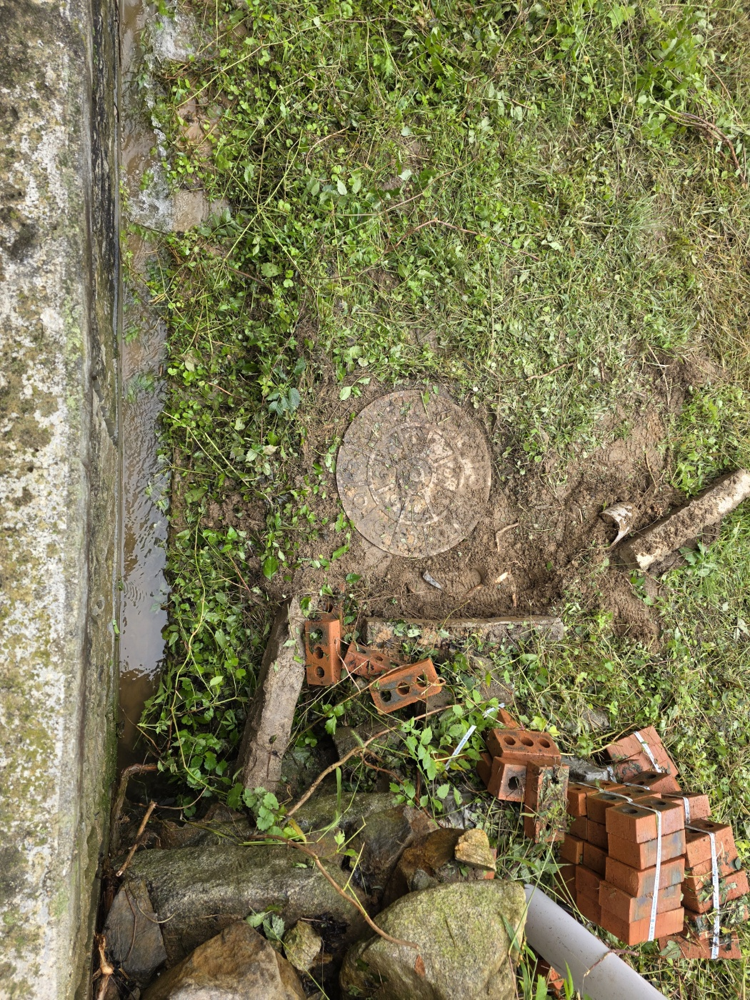
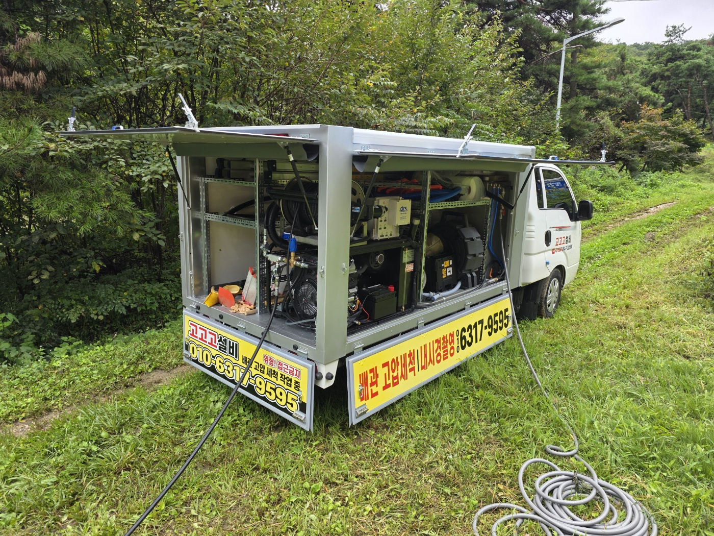
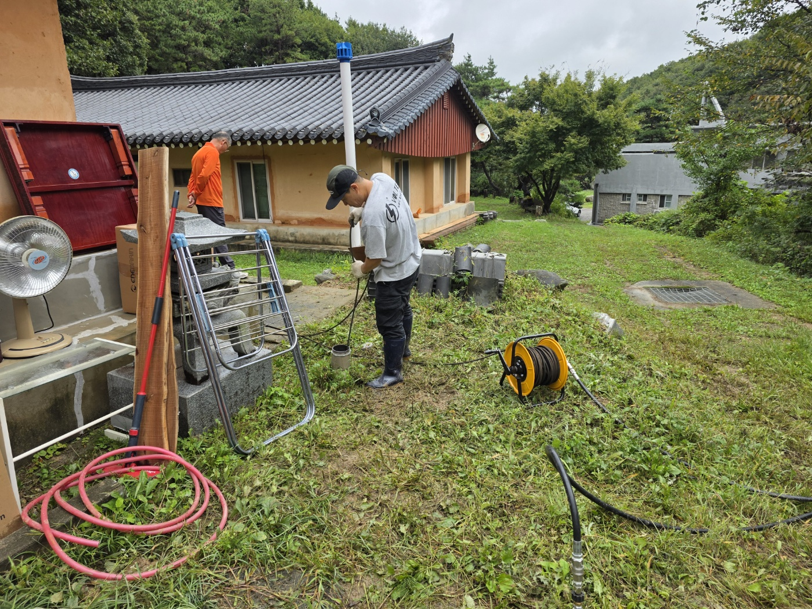
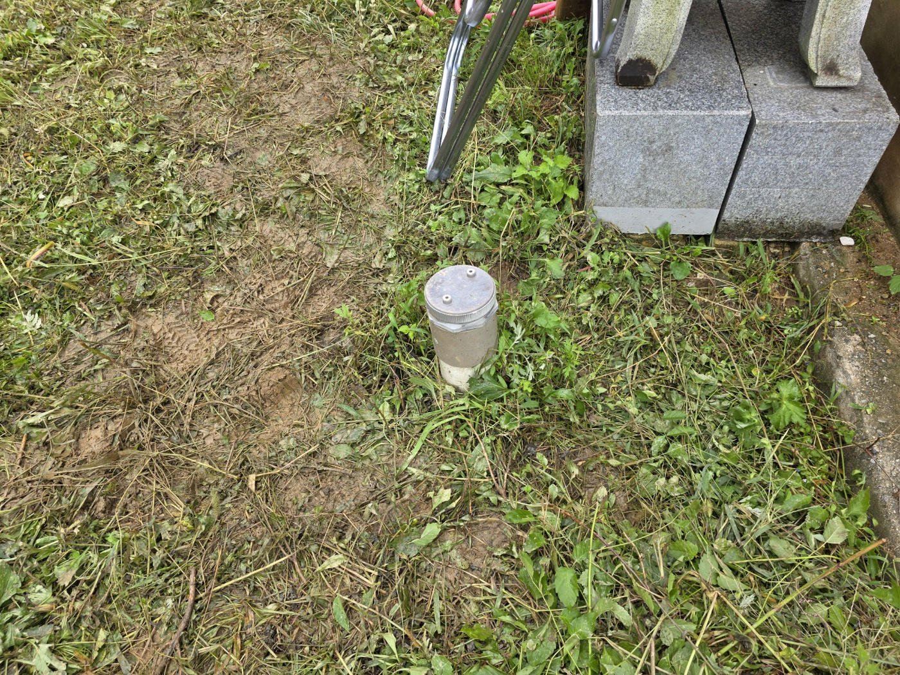
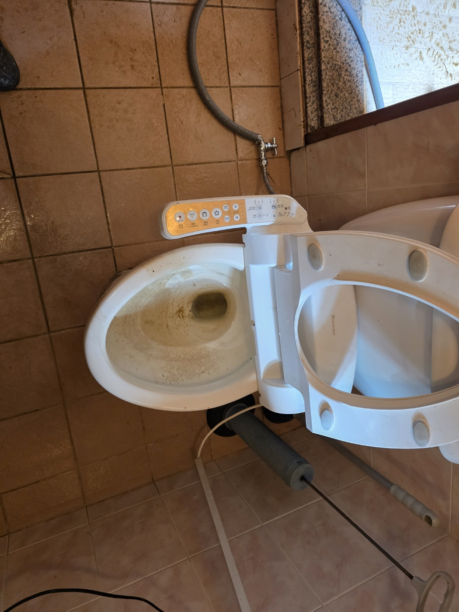

안녕하세요.. 고고고 설비입니다.. 오늘은 안성시 양성면에 있는 한옥 주택에서 하수구막힘 신고를 받고 다녀온 현장입니다.
마당 한쪽 배수로 옆으로 배관이 땅 위로 드러나 있었는데, 옆 도랑에는 물이 잘 안 빠지고 고여 있는 상태였습니다.. 어디서부터 막혔는지 확인하려고 먼저 마당 곳곳의 맨홀 위치부터 찾아봤어요.

주택이 도로에서 떨어져 있고 마당도 넓은 편이라, 트럭에 실린 고압세척 장비와 내시경 장비를 마당 앞까지 바짝 대고 호스부터 풀었습니다.

두 분이 함께 마당에 호스릴을 펼쳐두고 배관 안으로 고압 호스를 조금씩 밀어 넣기 시작했습니다.. 오래된 한옥이라 배관도 세월이 느껴지는 만큼 무리하지 않고 천천히 진행했어요.

마당에 있는 청소구 뚜껑을 열어서 그쪽으로도 고압 호스를 넣어 안쪽 이물질을 밀어냈습니다. 배관 여러 구간을 나눠서 순서대로 뚫어야 했어요.

마무리로 실내 화장실 변기까지 분리해서 연결 배관 상태도 함께 점검했습니다. 세척 후에는 물이 예전보다 훨씬 잘 내려가는 걸 확인하고 작업을 마쳤어요.

오래된 주택은 마당 배관이 땅속에서 여러 갈래로 얽혀있는 경우가 많아서, 물이 잘 안 빠지기 시작하면 정확한 위치부터 찾는 게 우선입니다.
고고고 설비는 주택, 아파트, 원룸, 상가, 공장의 생활 하수 오수 배관을 관리해 주는 업체입니다. 고고고 설비에 전화 주시면 친절상담 정확한 진단 확실한 해결로 보답해 드리겠습니다!!